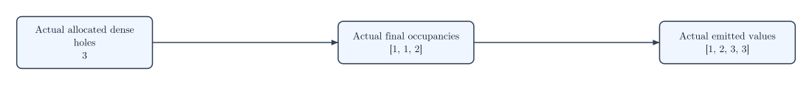
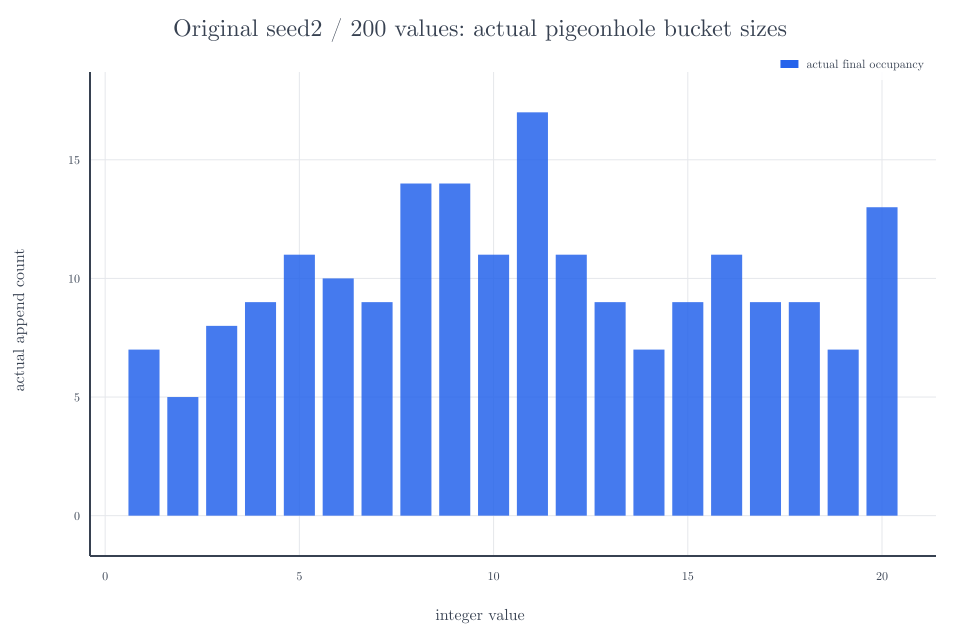
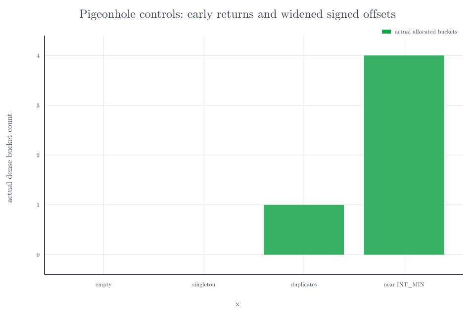
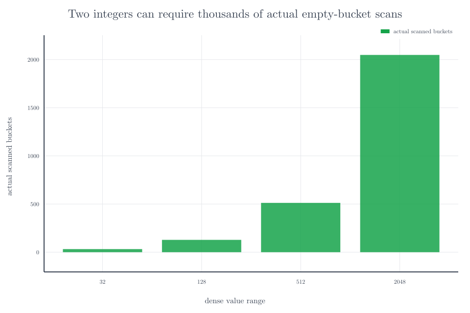

Pigeonhole sort: actual dense buckets and widened offsets
Abstract
Study the actual native producer from a tiny, inspectable example through the retained original experiment and explicit boundary/work controls. Complete editable C++ programs own every rendered native figure.
Mechanism and scope
A dense bucket is allocated for every integer value between the actual minimum and maximum, including empty buckets. Each input is appended once; buckets are scanned in increasing value order. The n+R cost includes R empty buckets, so a huge sparse range is a poor input for this method. Range and value offsets are widened before subtracting signed extremes, and the dense working range has an explicit policy. Empty and singleton inputs retain the original no-bucket fast path. Controlled integer fixtures suit this mechanism; no dataset is introduced.
A tiny actual producing history
The table reads actual producing records. The native diagram names actual captured values from that same run.
#include <dm/dm.hpp>
int main() {
std::filesystem::create_directories("build");
auto t = dm::algorithms::pigeonhole_sort_trace({3, 1, 3, 2});
std::print("\n| actual input index | value | actual bucket | actual size after append |\n| ---: | ---: | " "---: | ---: |\n");
for (auto &r : t.placements)
std::print("| {} | {} | {} | {} |\n", r.input_index, r.value, r.hole,
r.count_after);
dm::graphics::Diagram d;
d.node("n0", {0, 0},
std::format("Actual allocated dense holes\n{}", t.run.holes));
d.node("n1", {9, 0},
std::format("Actual final occupancies\n{}", t.occupancies));
d.node("n2", {18, 0}, std::format("Actual emitted values\n{}", t.run.sorted));
d.edge("n0", "n1").edge("n1", "n2");
d.save_svg("build/pigeonhole_sort_tiny.svg");
}| actual input index | value | actual bucket | actual size after append |
|---|---|---|---|
| 0 | 3 | 2 | 1 |
| 1 | 1 | 0 | 1 |
| 2 | 3 | 2 | 2 |
| 3 | 2 | 1 | 1 |

The retained original experiment
#include <dm/dm.hpp>
int main() {
std::filesystem::create_directories("build");
std::print("Original seven values sorted: `{}`.\n",
dm::algorithms::pigeonhole_sort({5, 3, 8, 1, 9, 2, 7}));
std::mt19937 rng(2);
std::uniform_int_distribution<int> value(1, 20);
std::vector<int> a(200);
for (int &x : a)
x = value(rng);
auto t = dm::algorithms::pigeonhole_sort_trace(a);
std::print("Actual input appends {}, allocated holes {}, scanned holes {}, emitted {}.\n",
t.run.placements, t.run.holes, t.run.scanned_holes, t.run.emitted);
std::vector<double> x, y;
std::print("\n| value | actual hole occupancy |\n| ---: | ---: |\n");
for (std::size_t h = 0; h < t.occupancies.size(); ++h) {
const auto key =
static_cast<long long>(t.run.minimum) + static_cast<long long>(h);
x.push_back(key);
y.push_back(t.occupancies[h]);
std::print("| {} | {} |\n", key, t.occupancies[h]);
}
auto p = dm::graphics::RPlot::create();
p.bars(x, y, "actual final occupancy", {37, 99, 235}, .8).title(
"Original seed2 / 200 values: actual pigeonhole bucket sizes").x_label(
"integer value").y_label("actual append count");
p.save_svg("build/pigeonhole_sort_original.svg");
}Original seven values sorted: [1, 2, 3, 5, 7, 8, 9].
Actual input appends 200, allocated holes 20, scanned holes 20, emitted 200.
| value | actual hole occupancy |
|---|---|
| 1 | 7 |
| 2 | 5 |
| 3 | 8 |
| 4 | 9 |
| 5 | 11 |
| 6 | 10 |
| 7 | 9 |
| 8 | 14 |
| 9 | 14 |
| 10 | 11 |
| 11 | 17 |
| 12 | 11 |
| 13 | 9 |
| 14 | 7 |
| 15 | 9 |
| 16 | 11 |
| 17 | 9 |
| 18 | 9 |
| 19 | 7 |
| 20 | 13 |

Explicit controls
#include <dm/dm.hpp>
int main() {
std::filesystem::create_directories("build");
std::vector<std::vector<int>> cases{{}, {1}, {2, 2, 2},
{INT_MIN, INT_MIN + 3}};
std::vector<std::string> labels{"empty", "singleton", "duplicates",
"near INT_MIN"};
std::vector<double> v;
std::print("\n| case | actual dense holes | actual appends | actual sorted values |\n| --- | ---: | ---: " "| --- |\n");
for (std::size_t i = 0; i < cases.size(); ++i) {
auto t = dm::algorithms::pigeonhole_sort_trace(cases[i]);
v.push_back(t.run.holes);
std::print("| {} | {} | {} | `{}` |\n", labels[i], t.run.holes,
t.run.placements, t.run.sorted);
}
bool rejected = false;
try {
dm::algorithms::pigeonhole_sort({INT_MIN, INT_MAX});
} catch (const std::length_error &) {
rejected = true;
}
std::print("Full signed range rejected before dense allocation: {}.\n",
rejected);
auto p =
dm::graphics::RPlot::barplot(v, labels, "actual allocated buckets");
p.title("Pigeonhole controls: early returns and widened signed offsets").y_label("actual dense bucket count");
p.save_svg("build/pigeonhole_sort_controls.svg");
}| case | actual dense holes | actual appends | actual sorted values |
|---|---|---|---|
| empty | 0 | 0 | [] |
| singleton | 0 | 0 | [1] |
| duplicates | 1 | 3 | [2, 2, 2] |
| near INT_MIN | 4 | 2 | [-2147483648, -2147483645] |
Full signed range rejected before dense allocation: true.

Actual selected work
#include <dm/dm.hpp>
int main() {
std::filesystem::create_directories("build");
std::vector<double> v;
std::vector<std::string> labels;
std::print("\n| two input values | actual placements | actual scanned buckets | actual emitted values " "|\n| --- | ---: | ---: | ---: |\n");
for (int range : {32, 128, 512, 2048}) {
auto r = dm::algorithms::pigeonhole_sort_run({0, range - 1});
labels.push_back(std::to_string(range));
v.push_back(r.scanned_holes);
std::print("| 0 and{} | {} | {} | {} |\n", range - 1, r.placements,
r.scanned_holes, r.emitted);
}
auto p = dm::graphics::RPlot::barplot(v, labels, "actual scanned buckets");
p.title("Two integers can require thousands of actual empty-bucket scans").x_label("dense value range").y_label("actual scanned buckets");
p.save_svg("build/pigeonhole_sort_work.svg");
}| two input values | actual placements | actual scanned buckets | actual emitted values |
|---|---|---|---|
| 0 and31 | 2 | 32 | 2 |
| 0 and127 | 2 | 128 | 2 |
| 0 and511 | 2 | 512 | 2 |
| 0 and2047 | 2 | 2048 | 2 |

API and interpretation
Every block is a complete editable C++ program. Reusable searches, walks, geometry decisions, fixture histories and algorithm work live in the canonical library. Captured records own their values and are not reconstructed by a second algorithm in the report. Explicit policies count the documented selected calls, records or scalar entries; they are not peak-byte or wall-clock budgets. Original reference curves are labelled as references, and finite returned results are not promoted into universal convergence, recovery, scaling or speed guarantees.
Python sorted independently checks two hundred duplicate-bearing signed-input
fixtures and actual widened bucket offsets. Frozen comparisons cover one
thousand ordinary bounded-range inputs. The shared batch passes83 native
regression tests,18 directly instrumented sanitizer tests,84 compiled and
executed public examples,391/391 scoped documentation definitions, standalone
and installed header checks, a linked installed consumer and ten representative
symbol hovers. All four complete programs execute and their computed results and
local figures survive HTML and Markdown export. Build receipts:
build/mepml-conversion/batch-284-293/.